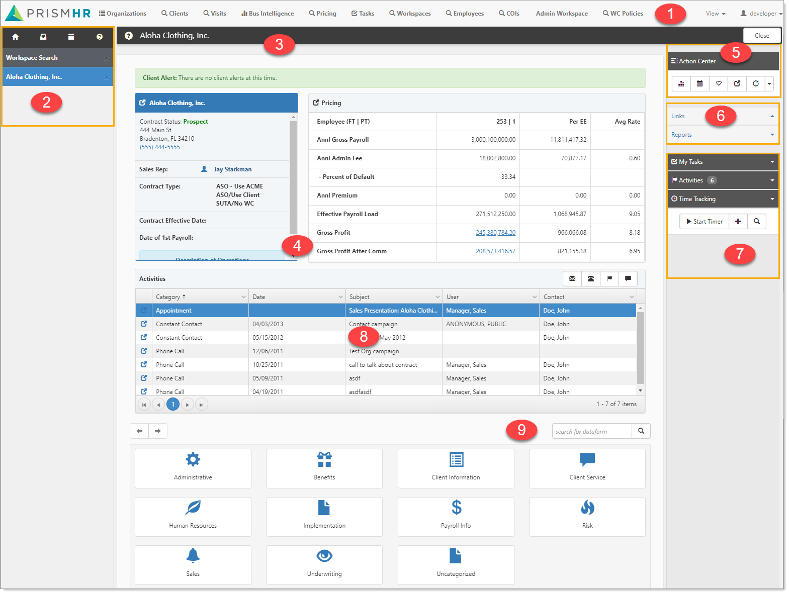
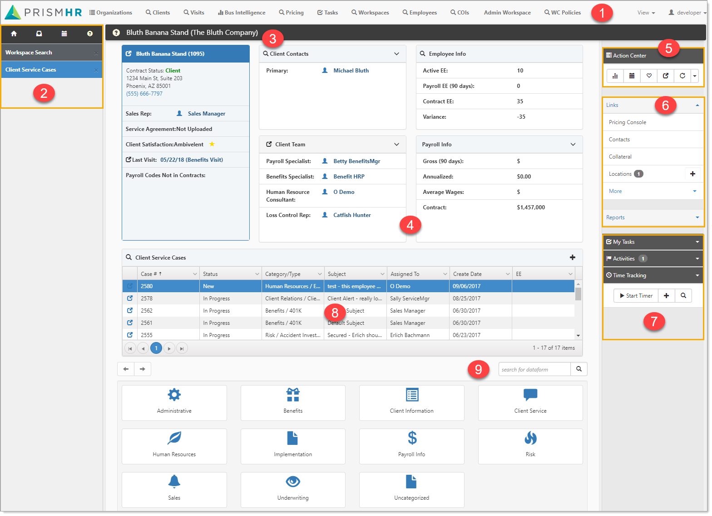

Workspace: A Workspace is a set of dataforms for collecting and storing information, generally about a specific client or business. Workspace dataforms are related to a specific project and share a common foreign key. Workspaces are often created by cloning a Template Workspace, enabling a consistent look and feel, as well as a consistent set of dataforms. You can also create a workspace (see
Workspace landing page: The Workspace landing page acts in many ways as the container for the Client. From the Workspace landing page, you can quickly access client information. The dynamic nature of the Workspace landing page is shown in the following images. Depending on the status of the client workspace (prospect or client), a different landing page is displayed.
The Prospect status is for clients that are in the sales pipeline. The landing page for these workspaces provides access to items appropriate for this stage.

The Client landing page reflects those items you need to track after the client is onboarded.

The numbered items in the Prospect and Client landing page examples correspond to the following list:
User modules: User modules are the individual dashboards and tools within
Work items: Work items are generally available throughout all stages of client development. This is your multitask list of open items and contains a series of collapsible work items that can consist of modules, such as search and report dashboards, dataforms, tasks and so on.
Header: The header consists of a dark bar across the top of the page where information can be displayed and a container below it for the workspace landing tiles.
Workspace landing tiles: Workspace landing tiles are status dependent and designed to give you quick access to the information you need for this client. You can expand most workspace landing tiles for more detail.
Action Center: Action Center items are generally available throughout all stages of client development.
Links: Links are configurable and provide a method for accessing the dataforms and reports necessary at this stage of client development. Links commonly include Contacts, Cases, Locations, and more.
My Actions: The action items at the bottom of the Action Center represent the tasks and activities for client management. If your user account has time tracking enabled, time tracking also displays here.
Lists: Lists act like pre-filtered dataform lists, allowing you to edit the visible list items, or open for a full search window.
Dataform search: Dataforms not directly accessible on the landing page through embedded lists or linked to the landing page as Action items are available through the Workspace dataform search at the bottom of the Workspace landing page.
Dataforms are classified into Groups, and these groups are available from a series of icons at the bottom of the Workspace landing page. Select a dataform item to open it in your Work Center as an active work item.
Topics in this section